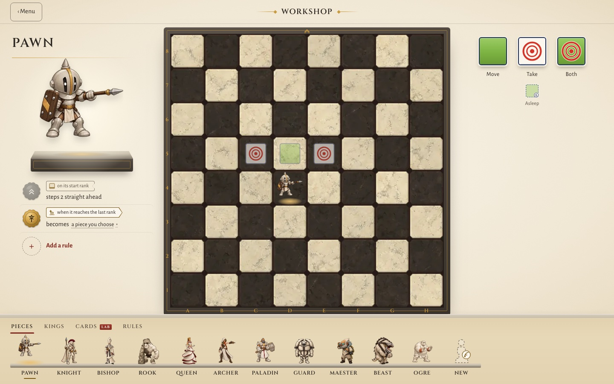
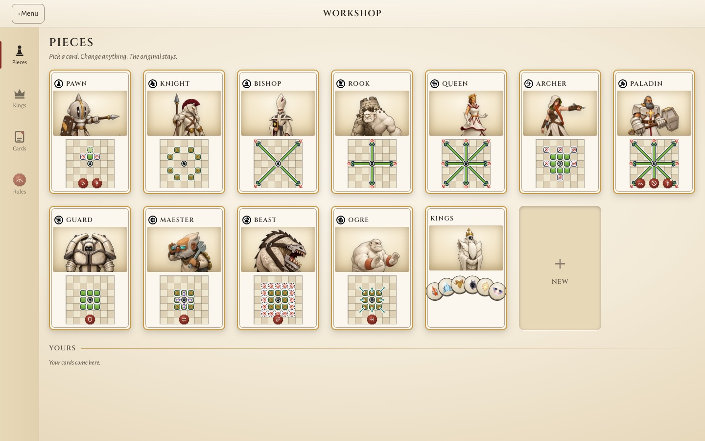
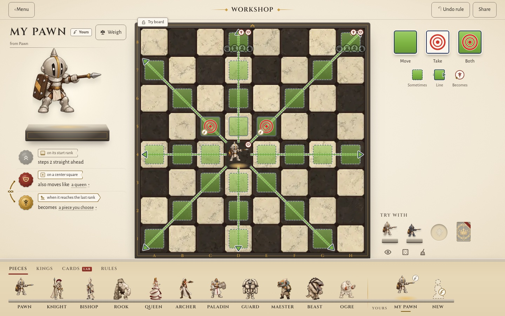
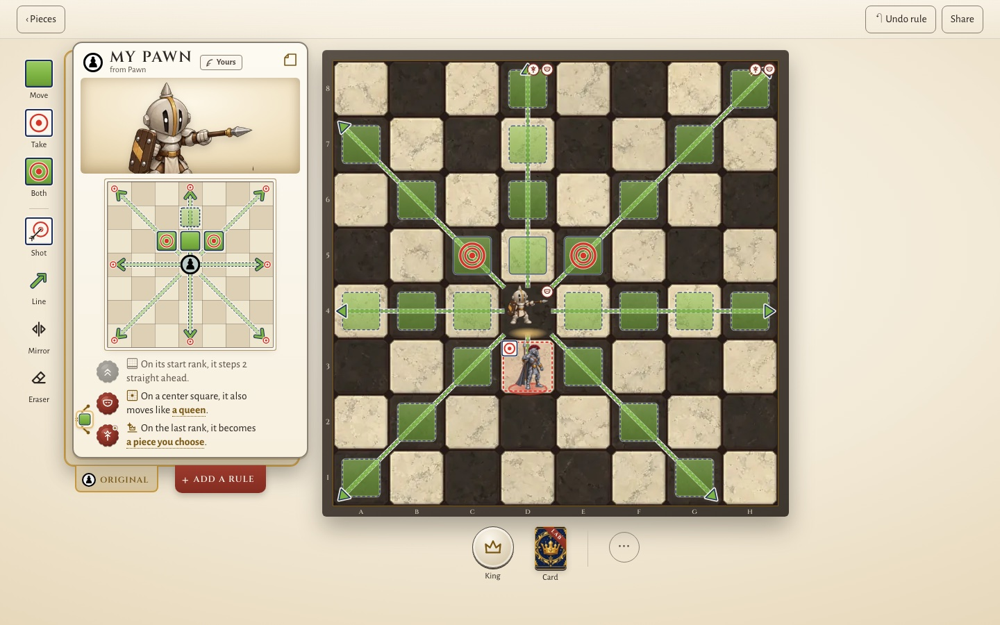
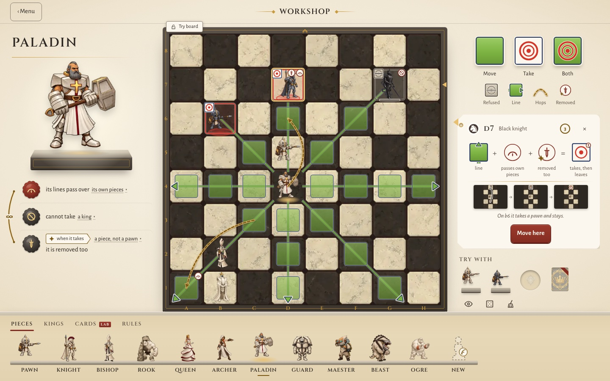
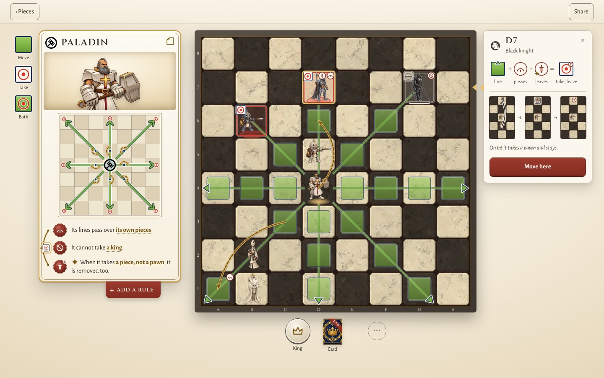
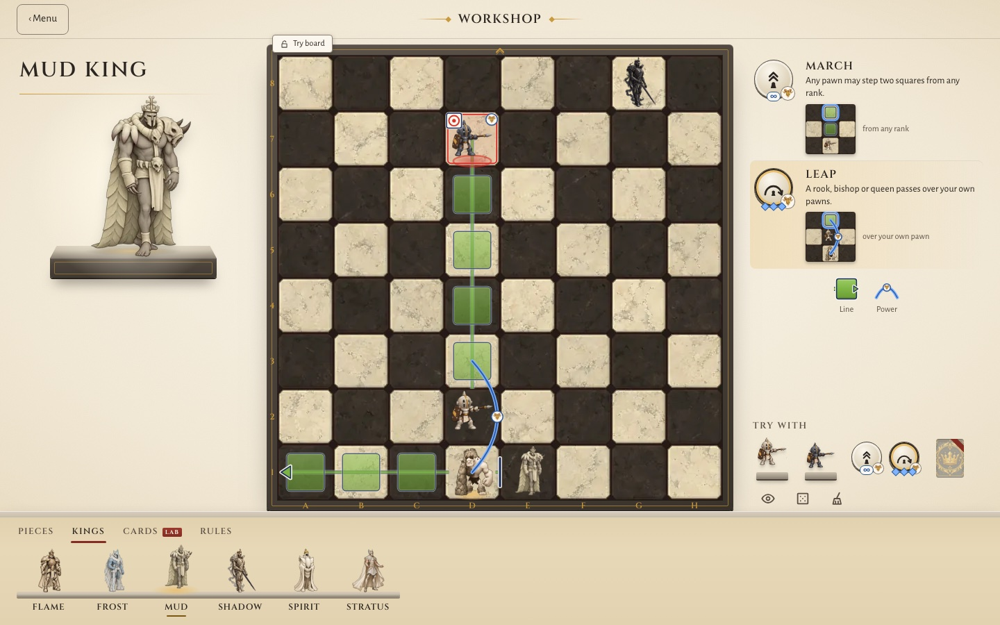
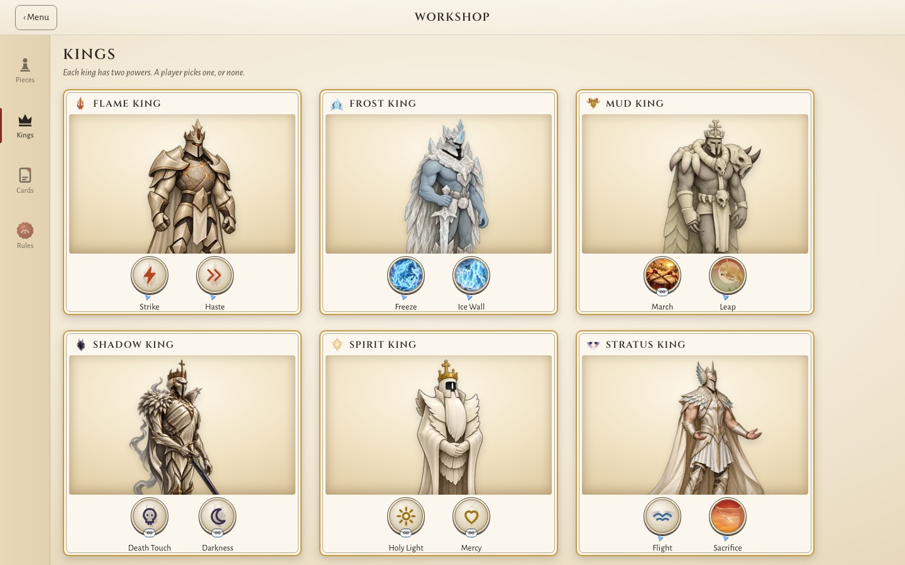

King Down · Rules workshop · 10 Oct 2026
Same rules, same marks.
The difference is where a rule lives: A on the board, B on a card.
open · B binder
Open live ↗You seeOne piece, the Pawn, on a large stone board. Its rules are seals at left. All figures stand on a ledge below.
You doTap a figure to put it on the board. Paint or add a rule right there.

Open live ↗You seeA binder page: one card for each piece. A card shows art, a small move diagram and up to three seals.
You doPick a card. It opens, and a test board opens beside it.
Key differenceA starts with one piece at work on the board. B starts with the whole set, but no board.
stamped · B pawn-d4
Open live ↗You seeMy Pawn. The painted squares and the queen lines from the new rule are on the board. Dashed tiles mean “only sometimes”.
You doPick a brush (Move, Take, Both) and tap squares on the board. Add a rule: the board shows a preview first.

Open live ↗You seeThe My Pawn card: its diagram and three seals. The same moves show again on the test board.
You doPick a brush at the far left and tap the card diagram. Add a rule from the drawer under the card.
Key differenceIn A you paint the real board. In B you paint the small diagram on the card, and the board copies it.
hero · B hero
Open live ↗You seeThe Paladin. Tap d7, and the Why panel adds the rules: line + passes own pieces + removed too = takes, then leaves.
You doRead the sum and the three-step replay. Tap a seal at left to see only its marks.

Open live ↗You seeThe same sum and replay in a panel at the right. The rules are on the card at the far left.
You doRead the sum. Tap a seal on the card to see only its marks on the card and on the board.
Key differenceAlmost the same. In A, the marks and the seals that made them are on one board. In B, the moves show in two places: the card diagram and the board.
kings · B kings
Open live ↗You seeThe Mud king on the board. Its two powers are coins at right, each with a small diagram. Leap shows as a blue arc.
You doTap a coin to try it on the board. Pick another king on the Kings tab. LAB cards work the same way.

Open live ↗You seeThe Kings page: six king cards. Each has art and two power coins.
You doOpen a king card. A test board opens; tap a coin to try it. LAB cards have their own page.
Key differenceA shows a power at work on the board at once. B shows all six kings first; you open one to test it.
| AProving GroundYour choice | BBinder and Table | |
|---|---|---|
| Where a rule lives | On the board: seals beside it, marks on the squares. | On a card: a move diagram and up to 3 seals. |
| What you see first | One piece (the Pawn) on the board. The library is a ledge below. | The binder: every piece as a card. No board yet. |
| How you edit moves | Paint the board squares with Move, Take or Both. | Paint the 7×7 diagram on the card. The board copies it. |
| How many places show the moves | One: the board. | Two: the card diagram and the board. |
| Library | A ledge of figures with tabs: Pieces, Kings, Cards (LAB), Rules. | Binder pages from a side rail: Pieces, Kings, Cards, Rules. |
| Kings and powers | The king stands on the board. Its powers are coins beside it; tap one to try it. | A page of king cards with two coins each. Open one to test it. |
| Cards (LAB) | A hand on the ledge. Play a card on the board. | A page of card art. Open a card to test it on the table. |
| Best at | Change and test in one step. Cause and effect in one view. | Seeing the whole set. Sharing a piece as one card. One-to-one with the code (seal = rule block, 3 sockets). |
| Weak at | No view of all pieces at once. It needs a “See all” page. | The same moves in two places. More steps before you test. The diagram is small. |
| Judges | Art 8.5UX 8.5Systems 7.5Mean 8.2 | Art 8UX 7Systems 8Mean 7.7 |
Plan: build A. Take two parts of B into A: the binder grid as the “See all” page, and the card face as the thing a player shares.